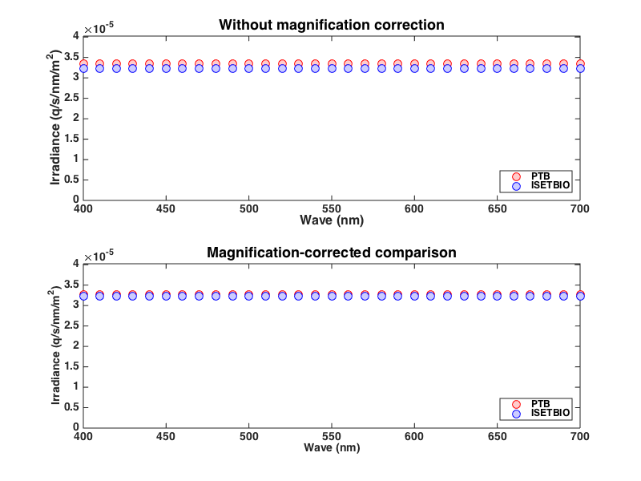
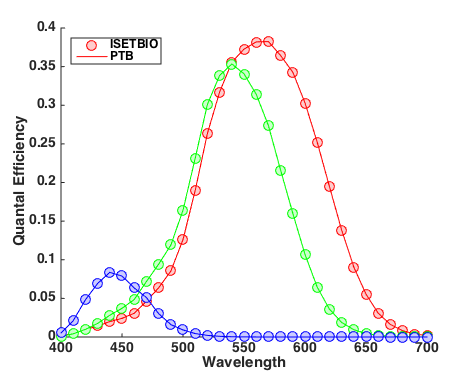
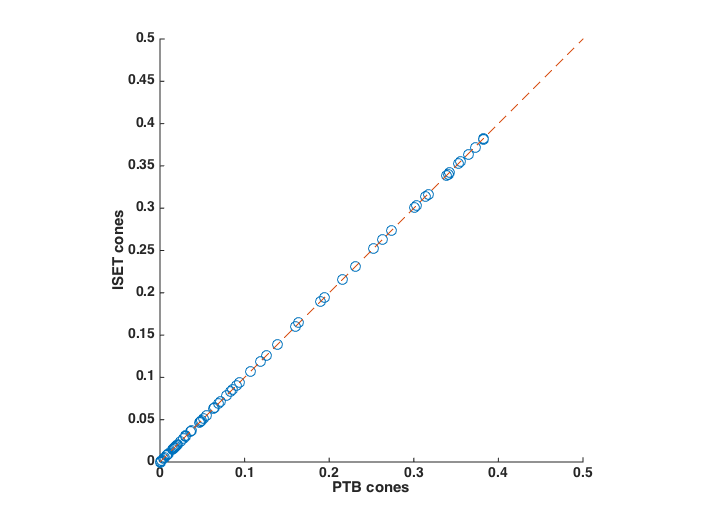

Contents
- Function implementing the isetbio validation code
- Initialize ISETBIO
- Set computation params
- Create a radiance image in ISETBIO
- Compute the irradiance in ISETBIO
- Define a region of interest starting at the scene's center with size
- Get wavelength and spectral radiance spd data (averaged within the scene ROI)
- Check spatial uniformity of scene radiance data.
- Get wavelength and spectral irradiance spd data (averaged within the scene ROI)
- Check spatial uniformity of optical image irradiance data.
- Get the underlying parameters that are needed from the ISETBIO structures.
- Compute the irradiance in PTB
- Compare irradiances computed by ISETBIO vs. PTB
- Numerical check to decide whether we passed.
- Compare spectral sensitivities used by ISETBIO and PTB.
- Compute quantal absorptions
- Adjust answer for differences in collecting area in the two calculations
- Also need to correct for magnification difference
- Plotting
function varargout = v_IrradianceIsomerizations(varargin) % % Validate ISETBIO-based irradiance/isomerization computations by comparing to PTB-based irradiance/isomerization computations. % % See also: v_Cones % % Minor issues: % % 1) The irradiance calculations agree to about 1%, once the difference in % how isetbio and PTB compute degrees to mm of retina is taken into % account. We are not sure of the reason for the 1% difference. This may % be related to the fact that the spatial uniformity of the optical image % irradiance in isetbio is only good to about 1%, even though we think the % optics are turned off in the computation. A similar magnitude difference % is seen in the isomerizations, which may have its roots in this same % effect (since isomerizations are computed from the irradiance in each % case), or in the slight differences in spectral qe below. % % 2) Isetbio and PTB agree to about a percent for quantal efficiencies, but % not exactly, about the CIE 2-deg cone fundamentals, when converted to % quantal efficiencies. They agree better in v_Cones, I think. Why? % % To do: % % 1) It might be good to vary some of the underlying parameters in both % calculational paths and make sure that all of the parameters are have % the expected and same effects in both cases. Key parameters are lens and % macular pigment density, pigment optical density, photopigment % lambda-max, cone aperature area, photopigment quantal efficiency. It is % possible this should be done in v_Cones rather than here. % % 2) Check that integration over wavelength is being done consistently in % isetbio and PTB. PTB works by assuming that spectral power is per % wavelength band. Isetbio takes irrandiance in a per nm basis and explicitly % includes the wavelength sampling step in its numerical integration. varargout = UnitTest.runValidationRun(@ValidationFunction, nargout, varargin); end
Function implementing the isetbio validation code
function ValidationFunction(runTimeParams)
Initialize ISETBIO
s_initISET;
Set computation params
fov = 20; % need large field
roiSize = 5;
Create a radiance image in ISETBIO
scene = sceneCreate('uniform ee'); % Equal energy scene = sceneSet(scene,'name','Equal energy uniform field'); scene = sceneSet(scene,'fov', fov);
Compute the irradiance in ISETBIO
To make comparison to PTB work, we turn off off axis correction as well as optical blurring in the optics.
oi = oiCreate('human'); optics = oiGet(oi,'optics'); optics = opticsSet(optics,'off axis method','skip'); optics = opticsSet(optics,'otf method','skip otf'); oi = oiSet(oi,'optics',optics); oi = oiCompute(oi,scene);
Define a region of interest starting at the scene's center with size
roiSize x roiSize
sz = sceneGet(scene,'size');
rect = [sz(2)/2,sz(1)/2,roiSize,roiSize];
sceneRoiLocs = ieRoi2Locs(rect);
Get wavelength and spectral radiance spd data (averaged within the scene ROI)
wave = sceneGet(scene,'wave'); radiancePhotons = sceneGet(scene,'roi mean photons', sceneRoiLocs); radianceEnergy = sceneGet(scene,'roi mean energy', sceneRoiLocs);
Check spatial uniformity of scene radiance data.
This also verifies that two ways of getting the same information out in isetbio give the same answer.
radianceData = vcGetROIData(scene,sceneRoiLocs,'energy'); radianceEnergyCheck = mean(radianceData,1); if (any(radianceEnergy ~= radianceEnergyCheck)) UnitTest.validationRecord('FUNDAMENTAL_CHECK_FAILED', 'Two ways of extracting mean scene radiance in isetbio do not agree.'); return; end radianceUniformityErr = (max(radianceData(:)) - min(radianceData(:)))/mean(radianceData(:)); uniformityRadianceTolerance = 0.00001; quantityOfInterest = radianceUniformityErr; UnitTest.assertIsZero(quantityOfInterest,'Spatial uniformity of scene radiance',uniformityRadianceTolerance);
Get wavelength and spectral irradiance spd data (averaged within the scene ROI)
Need to recenter roi when computing from the optical image, because the optical image is padded to deal with optical blurring at its edge.
sz = oiGet(oi,'size'); rect = [sz(2)/2,sz(1)/2,roiSize,roiSize]; oiRoiLocs = ieRoi2Locs(rect); if (any(wave-oiGet(scene,'wave'))) UnitTest.validationRecord('FUNDAMENTAL_CHECK_FAILED', 'Wavelength sampling changed between scene and optical image.'); return; end isetbioIrradianceEnergy = oiGet(oi,'roi mean energy', oiRoiLocs);
Check spatial uniformity of optical image irradiance data.
With optics turned off, we think this should be perfect but it isn't. It's good to 1%, but not to 0.1%. This may be why PTB and isetbio only agree to about 1%.
This also verifies that two ways of getting the same information out in isetbio give the same answer.
irradianceData = vcGetROIData(oi,oiRoiLocs,'energy'); irradianceEnergyCheck = mean(irradianceData,1); if (any(isetbioIrradianceEnergy ~= irradianceEnergyCheck)) UnitTest.validationRecord('FUNDAMENTAL_CHECK_FAILED', 'Two ways of extracting mean optical image irradiance in isetbio do not agree.'); return; end irradianceUniformityErr = (max(irradianceData(:)) - min(irradianceData(:)))/mean(irradianceData(:)); uniformityIrradianceTolerance = 0.01; UnitTest.assertIsZero(irradianceUniformityErr, 'Spatial uniformity of optical image irradiance', uniformityIrradianceTolerance); UnitTest.extraData('irradianceData',irradianceData); UnitTest.extraData('irradianceUniformityErr',irradianceUniformityErr);
Get the underlying parameters that are needed from the ISETBIO structures.
optics = oiGet(oi,'optics'); pupilDiameterMm = opticsGet(optics,'pupil diameter','mm'); focalLengthMm = opticsGet(optics,'focal length','mm');
Compute the irradiance in PTB
The PTB calculation is encapsulated in ptb.ConeIsomerizationsFromRadiance. This routine also returns cone isomerizations, which we will use below to to validate that computation as well.
The macular pigment and integration time parameters affect the isomerizations, but don't affect the irradiance returned by the PTB routine. The integration time doesn't affect the irradiance, but we need to pass it
macularPigmentOffset = 0;
integrationTimeSec = 0.05;
[ptbIsomerizations, ~, ptbPhotoreceptors, ptbIrradiance] = ...
ptb.ConeIsomerizationsFromRadiance(radianceEnergy(:), wave(:),...
pupilDiameterMm, focalLengthMm, integrationTimeSec,macularPigmentOffset);
Compare irradiances computed by ISETBIO vs. PTB
The comparison accounts for a magnification difference in the computation of retinal irradiance. The magnification difference results from how Peter Catrysse implemented the radiance to irradiance calculation in isetbio versus the simple trig formula used in PTB. Correcting for this reduces the difference to about 1%
It might be useful here to explain how the correction factor is deterimend. One assumes that the squaring deals with linear dimension to area. Why the absolute value around the (m), however, is mysterious to DHB.
m = opticsGet(optics,'magnification',sceneGet(scene,'distance')); ptbMagCorrectIrradiance = ptbIrradiance(:)/(1+abs(m))^2;
Numerical check to decide whether we passed.
We are checking against a 1% error. We also store the computed values for future comparison via our validation and check mechanism.
tolerance = 0.01;
ptbMagCorrectIrradiance = ptbMagCorrectIrradiance(:);
isetbioIrradianceEnergy = isetbioIrradianceEnergy(:);
difference = ptbMagCorrectIrradiance-isetbioIrradianceEnergy;
quantityOfInterest = difference./isetbioIrradianceEnergy;
UnitTest.assertIsZero(quantityOfInterest,'Difference between PTB and isetbio irradiance',tolerance);
% Add validation data
UnitTest.extraData('fov', fov);
UnitTest.extraData('roiSize', roiSize);
UnitTest.extraData('tolerance', tolerance);
UnitTest.extraData('magCorrectionFactor',m);
UnitTest.extraData('ptbMagCorrectIrradiance', ptbMagCorrectIrradiance);
UnitTest.extraData('isetbioIrradianceEnergy',isetbioIrradianceEnergy);
% Add extra data
UnitTest.extraData('scene', scene);
UnitTest.extraData('oi', oi);
Compare spectral sensitivities used by ISETBIO and PTB.
The PTB routine above uses the CIE 2-deg standard, which is the Stockman-Sharpe 2-degree fundamentals. Apparently, so does ISETBIO.
The agreement is good to about a percent.
Get PTB cones spectral sensitivity, quantal units
coneTolerance = 0.01;
ptbCones = ptbPhotoreceptors.isomerizationAbsorptance';
% Create isetbio sensor object with human cones, and pull out quantal
% efficiencies.
sensor = sensorCreate('human');
sensor = sensorSet(sensor,'size',oiGet(oi,'size'));
sensor = sensorSet(sensor,'noise flag',0);
isetbioCones = sensorGet(sensor,'spectral qe');
isetbioCones = isetbioCones(:,2:4);
% Compare with PTB
coneDifference = ptbCones-isetbioCones;
coneMean = mean(isetbioCones(:));
quantityOfInterest = coneDifference/coneMean;
UnitTest.assertIsZero(quantityOfInterest,'Difference between PTB and isetbio quantal efficiencies',coneTolerance);
UnitTest.validationData('isetCones',isetbioCones);
UnitTest.validationData('ptbCones',ptbCones);
UnitTest.extraData('coneTolerance',coneTolerance);
Compute quantal absorptions
Need to: 1) Get out L, M, S absorptions from the ROI where we get the spectrum 2) Compare with PTB computation done above. 3) Work through parameters that might lead to differences e.g., cone aperture, integration time, ...
sensor = sensorSet(sensor, 'exp time', integrationTimeSec); sensor = sensorCompute(sensor, oi); isetbioIsomerizationsArray = sensorGet(sensor,'photons'); % Pull out responses of each cone type within ROI. I am doing this by % brute force, because I can't find quite the right combination of ROI % gets from the sensor image. % % This code should be slicked up by an isetbio pro. Do I have the % row/col indexing convention of the RoiLocs correct, or reversed? sensorCFA = sensorGet(sensor,'cfa'); nLocs = size(oiRoiLocs,1); sumIsomerizations = zeros(3,1); nSummed = zeros(3,1); for jj = 1:nLocs coneType = sensorCFA.pattern(oiRoiLocs(jj,1),oiRoiLocs(jj,2))-1; sumIsomerizations(coneType) = sumIsomerizations(coneType)+isetbioIsomerizationsArray(oiRoiLocs(jj,1),oiRoiLocs(jj,2)); nSummed(coneType) = nSummed(coneType) + 1; end isetbioIsomerizations = sumIsomerizations ./ nSummed;
Adjust answer for differences in collecting area in the two calculations
PTB specifies cone aperture as the diameter of the inner segment and assumes a circular aperture, and allows separate specifciation for each cone type. ISETBIO specifies square pixels, the same for each cone type as far as I can tell.
Since in both cases isomerizations are proportional to area, we can do the consistency check without too much fuss.
It's possible we should handle this by setting the areas to be the same in the two calculations, rather than post-correcting.
I checked by hand that the axial densities and quantal efficiences in the two calculations match.
ptbConeDiameter = mean(ptbPhotoreceptors.ISdiameter.value);
if (any(ptbPhotoreceptors.ISdiameter.value ~= ptbConeDiameter))
UnitTest.validationRecord('FUNDAMENTAL_CHECK_FAILED', 'This calculation assumes all entries for PTB ISDiameter the same, but they are not.');
return;
end
ptbConeArea = pi*((ptbConeDiameter/2)^2);
pixel = sensorGet(sensor,'pixel');
isetbioConeArea = pixelGet(pixel,'width')*pixelGet(pixel,'width')*1e12;
ptbAreaCorrectedIsomerizations = (isetbioConeArea/ptbConeArea)*ptbIsomerizations;
Also need to correct for magnification difference
This follows irradiance correction above.
ptbCorrectedIsomerizations = ptbAreaCorrectedIsomerizations/(1+abs(m))^2;
isomerizationTolerance = 0.01;
isomerizationDifference = ptbCorrectedIsomerizations-isetbioIsomerizations;
quantityOfInterest = isomerizationDifference./ptbCorrectedIsomerizations;
UnitTest.assertIsZero(quantityOfInterest,'Difference between PTB and isetbio isomerizations',isomerizationTolerance);
% Add validation data
UnitTest.extraData('isomerizationTolerance',isomerizationTolerance);
UnitTest.extraData('isetIsomerizations',isetbioIsomerizations);
UnitTest.extraData('ptbIsomerizations',ptbIsomerizations);
UnitTest.extraData('ptbAreaCorrectedIsomerizations',ptbAreaCorrectedIsomerizations);
UnitTest.extraData('ptbCorrectedIsomerizations',ptbCorrectedIsomerizations);
UnitTest.extraData('ptbConeArea',ptbConeArea);
UnitTest.extraData('isetbioConeArea',ptbConeArea);
UnitTest.extraData('ptbPhotoreceptors',ptbPhotoreceptors);
% Add extra data
UnitTest.extraData('sensor',sensor);
Plotting
if (runTimeParams.generatePlots) h = figure(500); clf; set(h, 'Position', [100 100 800 600]); subplot(2,1,1); plot(wave, ptbIrradiance, 'ro', 'MarkerFaceColor', [1.0 0.8 0.8], 'MarkerSize', 10); hold on; plot(wave, isetbioIrradianceEnergy, 'bo', 'MarkerFaceColor', [0.8 0.8 1.0], 'MarkerSize', 10); hold off set(gca,'ylim',[0 1.2*max([max(ptbIrradiance(:)) max(isetbioIrradianceEnergy(:))])]); set(gca, 'FontName', 'Helvetica', 'FontSize', 14, 'FontWeight', 'bold'); legend({'PTB','ISETBIO'}, 'Location','SouthEast','FontSize',12); xlabel('Wave (nm)', 'FontName', 'Helvetica', 'FontSize', 16); ylabel('Irradiance (q/s/nm/m^2)', 'FontName', 'Helvetica', 'FontSize', 16) title('Without magnification correction', 'FontName', 'Helvetica', 'FontSize', 18, 'FontWeight', 'bold'); subplot(2,1,2); plot(wave,ptbMagCorrectIrradiance,'ro', 'MarkerFaceColor', [1.0 0.8 0.8], 'MarkerSize', 10); hold on; plot(wave,isetbioIrradianceEnergy,'bo', 'MarkerFaceColor', [0.8 0.8 1.0], 'MarkerSize', 10); hold off set(gca,'ylim',[0 1.2*max([max(ptbIrradiance(:)) max(isetbioIrradianceEnergy(:))])]); set(gca, 'FontName', 'Helvetica', 'FontSize', 14, 'FontWeight', 'bold'); xlabel('Wave (nm)', 'FontName', 'Helvetica', 'FontSize', 14); ylabel('Irradiance (q/s/nm/m^2)', 'FontName', 'Helvetica', 'FontSize', 14) legend({'PTB','ISETBIO'}, 'Location','SouthEast','FontSize',12) title('Magnification-corrected comparison', 'FontName', 'Helvetica', 'FontSize', 18, 'FontWeight', 'bold'); % Compare PTB sensor spectral responses with ISETBIO vcNewGraphWin; hold on; set(gca, 'FontName', 'Helvetica', 'FontSize', 14, 'FontWeight', 'bold'); plot(wave, isetbioCones(:,1),'ro', 'MarkerFaceColor', [1.0 0.8 0.8], 'MarkerSize', 10); plot(wave, ptbCones(:,1), 'r-'); plot(wave, isetbioCones(:,2),'go', 'MarkerFaceColor', [0.8 1.0 0.8], 'MarkerSize', 10); plot(wave, ptbCones(:,2), 'g-'); plot(wave, isetbioCones(:,3),'bo', 'MarkerFaceColor', [0.8 0.8 1.0], 'MarkerSize', 10); plot(wave, ptbCones(:,3), 'b-'); legend({'ISETBIO','PTB'},'Location','NorthWest','FontSize',12); xlabel('Wavelength'); ylabel('Quantal Efficiency') vcNewGraphWin; hold on set(gca, 'FontName', 'Helvetica', 'FontSize', 14, 'FontWeight', 'bold'); plot(ptbCones(:),isetbioCones(:),'o','MarkerSize', 10); plot([0 0.5],[0 0.5], '--'); xlabel('PTB cones'); ylabel('ISET cones'); axis('square'); end  
end